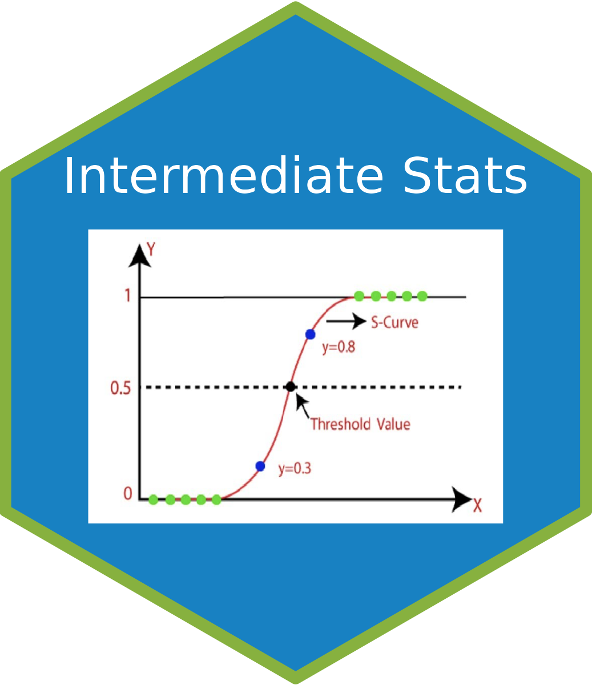

Exam review
Exam 2

Gradescope
Gradebook
Course information
Overview
Syllabus
Support
Schedule
Useful links
FAQ
Labs
Lab 0
Lab 1
Lab 2
Lab 3
Lab 4
Lab 5
Lab 6
Lab 7
Projects
Project 1
Project 2
Problem Sets
Problem Set 1
Problem Set 2
Problem Set 3
Problem Set 4
Exam review
Exam 1
Exam 2
Other Formats
PDF
Exam review
Exam 2
Exam 2 Review
Come back later!!
Exam 1